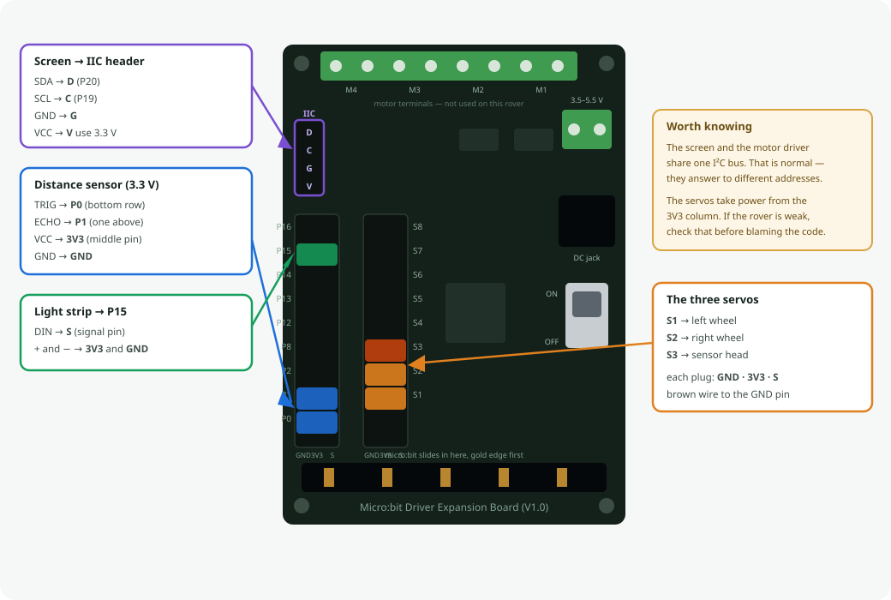

A micro:bit rover that drives on two servo wheels, looks around with an ultrasonic sensor on a third servo, and shows messages on a little screen.
You drive it from a web page over Bluetooth — nothing to install, no account, no WiFi. Open rxy_web in Chrome or Edge, press Connect, and the rover's own control panel appears.
The robot owns the layout. The app is a plain renderer: it connects, asks the rover what controls it has, and draws whatever comes back. There is nothing to configure in the browser, and no special build of the app for this robot.
And where those sockets actually are on the board:

| part | plugs into | notes |
|---|---|---|
| micro:bit V2 | the edge slot | V2 only — V1 hasn't enough memory for Bluetooth plus the screen |
| left wheel servo | S1 | 360° continuous rotation; 90 means stop |
| right wheel servo | S2 | mounted mirrored — see Straight-line trim below |
| little screen | I²C port | SSD1306 128×32 at address 0x3C |
| distance sensor | P0 trig · P1 echo | HC-SR04P; take VCC from 3V3 |
| sensor head servo | S3 | turns the eyes left and right |
| light strip | P15 | 8 NeoPixels — wired but not driven, see No light strip below |
| battery pack | DC socket | 4×AA, 3.5–5.5 V |
Still free for whatever you add next: P2 P12 P13 P14 P16. P8 is spoken for — see the tone pin below.
The screen and the motor driver both live on the I²C port and don't argue — the driver answers to 0x40, the screen to 0x3C. The wheels therefore cost no pins at all; they're driven over that same cable.
micro:bit drives P0 whenever it plays a note — and P0 is the sonar trigger here. Left alone, every beep would fire spurious pings. The firmware moves the tone output to P8 at boot, before anything can sound; a V2 still beeps through its built-in speaker, so nothing is lost. That is why P8 is not in the free list.
The servo headers on this board take their power from the 3V3 column. Two 360° servos driving a chassis on 3.3 V will be weak and stall easily — they normally want 4.8–6 V. If the rover struggles to move, that is the first thing to check, not the code. Feed the servos from the battery rail if the board offers it.
Open makecode.microbit.org → Extensions, and paste this URL into the search box:
https://github.com/DFRobot/pxt-motorTwo extensions are needed. Paste each URL in turn:
https://github.com/DFRobot/pxt-motor
https://github.com/tinkertanker/pxt-oled-ssd1306| appears as | provides | |
|---|---|---|
| DFRobot/pxt-motor | motor | motor.servo(), motor.MotorRun(), motor.motorStop() |
| tinkertanker/pxt-oled-ssd1306 | OLED | OLED.init(), OLED.clear(), OLED.writeString() |
Not pxt-neopixel. It will not share this board with Bluetooth — see No light strip below.
Paste the URL — do not search by name. DFRobot published this as plain motor, the most generic name on the platform, so a search returns a pile of look-alikes with this one somewhere among them. Pick the wrong one and it compiles cleanly and moves nothing, which is a miserable thing to debug.
Wheel trim is stored in the micro:bit's own flash, which needs the settings library. Searching Extensions for it finds nothing — it ships with the editor but is marked hidden, so it has to be added by hand:
pxt.jsondependencies:"settings": "*"It goes last in the list, so the line above it needs a comma added to its end. Miss that and the failure is a JSON parse error that never mentions settings at all.
"*" means the copy bundled with the editor, not a download. Without it every settings. line fails with Cannot find name 'settings' — six errors, all pointing at the trim code.
Adding Data Logger does not help: it depends on flashlog, not on settings.
These live behind the gear icon → Project Settings, and getting them wrong looks like a broken app rather than a wrong setting — so set them before you wonder why nothing connects.
| setting | set it to | why |
|---|---|---|
| No Pairing Required | on | The browser can then advertise-and-connect straight away. The other two modes — JustWorks (copy a pattern) and Passkey (verify a number) — make every child pair the micro:bit first, and after pairing you must reset it and re-enter pairing mode just to flash again. |
| Bluetooth UART service | on | This is the only service the rover uses. The whole protocol is lines of text over it. |
| accelerometer, button, LED, magnetometer, temperature, IO pin, event services | off | Each one costs memory and advertising space for nothing. The firmware never calls them. |
Radio and Bluetooth cannot both exist. Adding the Bluetooth extension removes the radio package, and MakeCode asks you to accept that. It's a hardware limitation, not a setting — so if a project uses radio.sendNumber anywhere, it cannot also be a Bluetooth robot. This firmware uses no radio blocks.
Transmit power is set in code (bluetooth.setTransmitPower), not in the settings — the firmware turns it down while the layout is transferring, which is the cheapest way to keep the link stable through a long burst.
One code rule worth repeating, because it cost real debugging: never write to the UART from inside the receive callback. Sending a reply from within onUartDataReceived starves the Bluetooth stack's buffers and wedges the whole firmware. Every reply in this file is queued and sent from the main loop instead.
Switch to the JavaScript view, paste firmware/rover-remote.ts, and download to the micro:bit.
There is no local build step. MakeCode compiles in the browser, so a fresh paste is the build — treat a successful paste as the thing that proves the code, not a formality.
Straight-line trim. The right servo is mounted facing the other way, so "forward" is down from 90 on that side and up on the left. Trim is added on the left and subtracted on the right, so a positive number means "more forward" on both wheels. Add it to both and the rover curves. Two 360° servos never run at matched speeds out of the box, so expect to trim every robot individually — drive it forward on a flat floor and nudge whichever wheel is lagging.
No light strip. The 8-pixel header on P15 is wired and the strip lights up on its own, but nothing in the firmware drives it: pxt-neopixel will not share this board with Bluetooth, and between a light strip and a robot you can steer, the robot wins. Removed in R1-v11; the code that drove it is still in git (819020c) if that ever changes.
The 128×32 screen needs its start-up corrected. The common MakeCode screen libraries accept a height but hardcode the two registers that tell the display how many rows it actually has. After init, send 0xA8, 0x1F and 0xDA, 0x02, or text draws doubled and interlaced. It starts up without any error, so there's nothing to chase — you just get a strange-looking screen.
Everything specific to this board sits in one short seam at the top of firmware/rover-remote.ts:
wheels(l, r) drive mix → two servo pulses, with the mirror and the trim
wheelsStop() both wheels to neutral
pingCm() distance sensor on P0/P1; 500 means nothing came backEverything below that seam is the shared rxy stack — Bluetooth, the chunked layout transfer, the layout cache, telemetry, the drive watchdog, the D-pad handling. Changing to a different driver board means rewriting those three functions and nothing else.
app → robot GETCFGVER what layout do you have?
robot → app CFGVER <id> this one
(match) → CFGOK already cached, nothing to send
(differ)→ GETCFG send it all
app → robot SET <widget> <v> a control moved
robot → app UPD <widget> <v> a reading changedBecause the layout is cached against that id, only the first connection pays for the transfer.
The Level selector is on every panel, so you switch with a dropdown instead of reflashing. Each is a separate layout stored on the robot and only the chosen one is sent, so Beginner appears in under three seconds where Expert takes about nine.
| panel | what's on it |
|---|---|
| Beginner | pad, STOP, distance, alert. Nothing else. |
| Expert (the default) | everything the rover can do |
| Drive | jog each wheel, watch which way it turns, trim it straight |
| Distance | gauge, alert, graph, and the sensor head |
| Screen | type a message, see it on the glass |
Expert is not laid out in gen_layout.py any more. It was arranged in the app's own Build screen and exported, because parts of it cannot be expressed by that file's rules — STOP sits inside the D-pad's empty centre, and each wheel reads as one control, [−1] [slider] [+1] with the number underneath. The generator's overlap check would reject both, correctly.
To change it: open Build, rearrange, export, and drop the JSON over firmware/expert_from_builder.json. Then run:
python gen_layout.pyIt still refuses to build if a widget on that panel has no firmware handler, if two share an id, or if the Level selector is missing — the checks that decide whether the robot works. Only the geometry house-rules are skipped, since a person placed those deliberately and has already seen them on screen.
The generator also strips everything the app reconstructs by itself — empty props, groupId, and any value equal to its own default — which is why the hand-tuned panel transfers in about 9.9 s rather than the 14.4 s the raw export would have taken.
The ultrasonic sits on its own servo, so the rover can look around without turning. Look aims it by hand, Ahead re-centres it, and setting Head to Sweep pans it back and forth on its own, so the distance graph draws the room instead of one fixed direction.
Sweep stops automatically in Avoid mode and the head returns to centre. Avoid decides where to go from the distance straight ahead, so with the head panning a wall beside the rover would read as an obstacle in front of it.
The sweep stops short of the ends, 30° to 150°. A head that slams into the chassis stalls the servo, which buzzes and draws current instead of moving.
Four lines, 21 characters each — the panel is 128×32 and the font is 5×8, so it holds more than the two-line banner it used to draw.
micro:bit gazug
Dist -- cm
Trim L 0 R 0
Speed 200 Head 90The top line is the one that earns its place: micro:bit gazug is the name the browser's chooser lists. Every micro:bit in the room offers the same "BBC micro:bit" prefix, so without it you are picking a robot at random. Once connected that line becomes the firmware version and the drive mode.
Trim is there because it lives in the rover's own flash now — it is how you check that the robot you just picked up is the one you calibrated, before connecting to anything.
Type into Say something on the Screen panel and your message takes the top two lines; trim and speed keep the bottom two.
Why there is no clock on it. Each character costs ten separate I²C transactions, and the screen library offers no way to move the cursor — the only way back to the top-left is to clear the whole panel. Every repaint is therefore the full screen again, on the same bus as the servo driver. So the screen is redrawn only when the text actually differs, and distance is rounded to 5 cm so sensor jitter alone cannot trigger one. A parked rover costs no I²C at all. A ticking second would have cost a full repaint every second forever — the uptime clock stays in the app, where it is free.
Two 360° servos never run at matched speeds, so a rover always curves a little at first. Drive forward on a flat floor and raise whichever wheel is lagging. Expect single digits — more than about 10 usually means something mechanical.
Each wheel has three ways at the same number, because getting a rover straight is really three jobs:
| control | what it's for |
|---|---|
| Trim L / Trim R sliders | get close in one drag |
| L − 1 / L + 1, R − 1 / R + 1 | the one that matters — "still pulls slightly left" is a single degree, and one degree of servo pulse is the floor |
| L = / R = fields | type an exact number back in |
They all drive the same value and the robot echoes back to all three, so they can never disagree: nudge the button and the slider moves with it.
The rover remembers it. From R1-v12 trim is written to the micro:bit's own flash, so a trimmed robot stays trimmed through a battery change, a reflash of the same program, and a move to a different tablet. Pick up any rover from the shelf and it is already straight.
It is saved two seconds after you stop adjusting, not on every movement of the slider — flash has a finite number of erase cycles, and a write per event would spend the chip's life calibrating one robot.
This needs a micro:bit V2: the settings API is excluded from the V1 build. No loss here, since the rover already needs V2 for Bluetooth plus the screen.
The screen can show two eyes instead of the status text. The Screen selector, in the SCREEN group on Expert and on the Screen panel, picks between three settings:
| Face | always the eyes |
| Status | always the text (the default) |
| Auto | text until the app connects, eyes afterwards |
Auto is the one worth choosing. Before a connection the only thing you need from the glass is which micro:bit this is; after it, the app is already showing you every number, so the robot may as well have a face. The choice is kept in flash beside the trim, so a rover comes back the way you left it.
What the eyes do:
| follow the sensor head | always — the pupils track Look |
| blink | every 2.5–6 s |
| worried, brows up | something closer than 25 cm |
| dizzy | for 2 s after a spin |
| asleep | 20 s with no driving |
Two things that look like bugs and are not. Dizziness arrives after the spin, not during it — the face is frozen while the wheels turn, deliberately (see below). And worried needs Telemetry set to All, because otherwise the rover only measures distance in Avoid mode and has nothing to be worried about.
The screen extension cannot draw this. drawFilledCircle() calls drawLine() once per column, every drawLine() ends in drawShape(), and drawShape() spends six command writes plus a data write for each column-page it touches — one filled circle is several hundred I²C transactions.
So the face keeps its own 512-byte buffer and pushes whole frames: eight writes of 65 bytes for the entire screen, against ten transactions per character on the text path. It redraws only when the picture actually changes, so a sleeping or worried face costs nothing at all, and it holds still while the wheels turn — a frame is 512 bytes on the same I²C bus as the servo driver, inside the loop that feeds the drive watchdog.
| mode | what it does |
|---|---|
| Manual | you drive with the pad |
| Avoid | the rover drives itself and backs away from obstacles |
| drive, trim | working on hardware |
| trim stored on the robot | working on hardware |
| distance sensor, sweep head | working on hardware |
| screen | status display — working on hardware |
| the face | written — needs a flash to confirm on glass |
| five control panels | working on hardware |
| light strip | removed in R1-v11 — clashes with Bluetooth |
Three of these need no extra parts — a micro:bit V2 already has a speaker, a microphone and a motion sensor.
Powered by Workshop-DIY.org